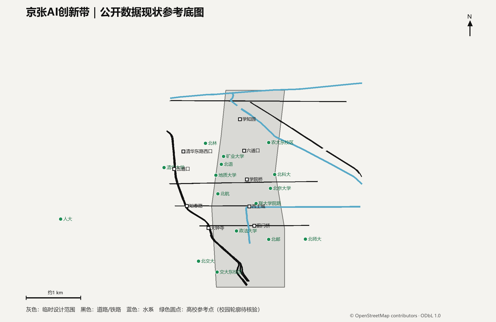
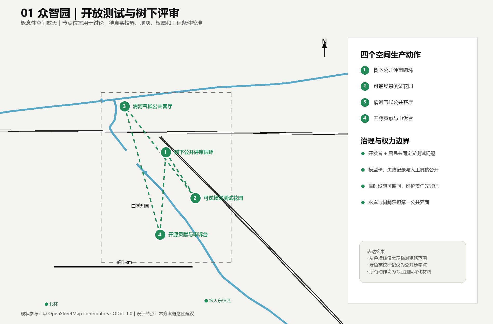
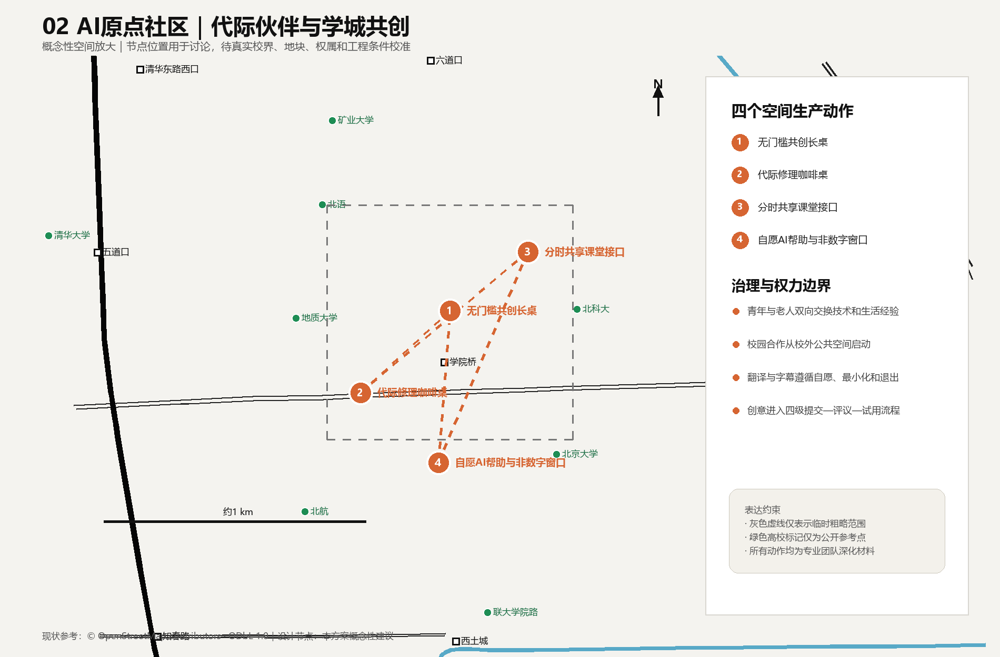
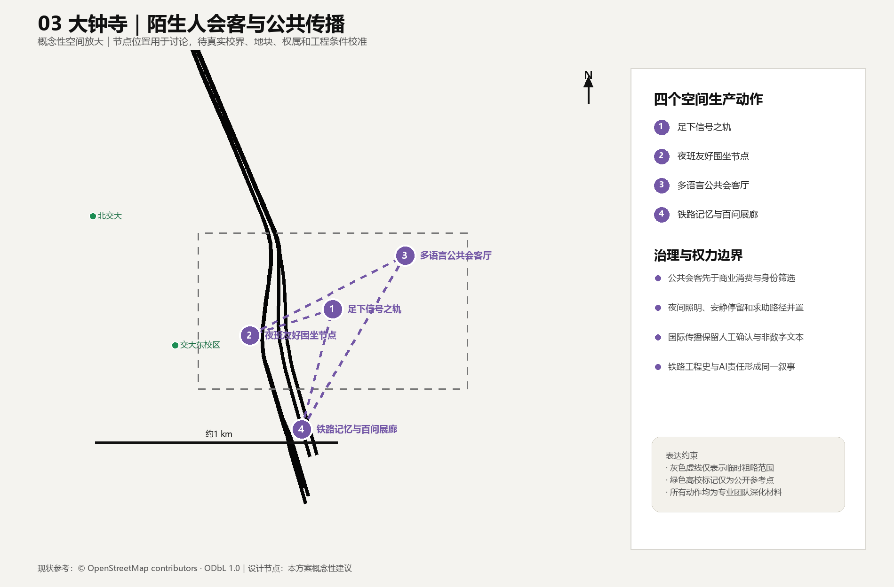

围坐京张·城市发生—AI时代的开放空间生产与共创
基于 provisional boundary 和结构化自检要求生成的 formal AI 城市设计方案包；保留精度警示和复算要求，但组织方数据缺口不阻断内容评分。
围坐京张·城市发生—AI时代的开放空间生产与共创
方案总纲：空间作为持续争取的社会关系
“围坐京张·城市发生”拒绝把城市理解为等待技术填充的空白容器，也拒绝把“AI创新带”简化为企业、算力与消费场景的空间投影。依照列斐伏尔的空间生产理论，空间始终由物质实践、制度与专业表述、生活经验及象征想象共同生产；道路、门禁、座椅、平台规则和数据接口都在不断回答谁可以进入、谁能够停留、谁有资格定义此地。大卫·哈维关于城市权利的论述进一步提示：城市权利超越了被动取得设施的个人权利，指向集体改变城市化过程、重新分配城市剩余与决定共同生活方式的权力。[source:LEFEBVRE-SPATIAL-PRODUCTION] [source:HARVEY-RIGHT-TO-CITY]
因此，“京张智脉”被定义为一套允许不同群体持续协商、占用、改写和照料空间的制度—空间框架，其意义远超一张建成后固定不变的总图。百年铁路遗产轴既承载记忆，也暴露基础设施曾经服务何种生产秩序；众智园、北京AI原点社区和大钟寺三核构成技术资本、专业知识、行政管理与日常生活相遇和冲突的公共场域，突破单向输出创新的中心模式；慢行蓝绿环承担创新资源、自然舒适与公共交往的日常再分配功能，摆脱景观装饰的从属地位。空间策略仍概括为“一带三核、两翼协同、十景成网”，但以四条政治—空间约束校验：任何AI服务必须保留非数字替代路径；任何公共空间必须说明准入、停留、发言和维护规则；任何空间判断必须能回到几何和来源；任何运营承诺必须标明责任主体、申诉渠道与退出机制。[source:AGENT-TASKBOOK] [standard:PROJECT-AGENT-OPEN-CALL-TASKBOOK] [depth:overall_spatial_structure]
原创设计动作包括：三条从公共核心连接三处重点区的“智脉廊道”，形成步行、骑行、低速接驳与公共服务叠合的概念网络；“算法橱窗”公开城市智能体的用途、数据、责任与申诉入口；“百年—百问”遗产叙事把铁路工程史与AI伦理问题并置。新增廊道已记录于 [data:geometry/roads.geojson#ROAD-JZ-02-1]，所有面积敏感结论仍服从临时边界限制。[metric:site_area_sqm]
设计优先级依次为：先缝合断点和开放首层，再布置可逆的轻量试验设施，最后才讨论依赖法定条件的建设量。每一次建设、管理与日常使用都会重新生产空间，因此“建成”仅是过程中的一个节点；冲突记录、公共评议、可逆调整和权利复核贯穿长期运行。短期运营应让使用者的实践反过来修正控规、交通、市政和建筑深化，避免沦为替既定总图寻找使用者的招商工具。
理论框架：从空间三元组到集体城市权利
本方案以列斐伏尔的“空间实践—空间表征—表征空间”三元组作为全文统一的分析方法，使理论直接参与问题诊断与设计判断，避免沦为既有设计的附加标签：
| 空间生产维度 | 在京张创新带中的表现 | 主要权力问题 | 设计回应 | | --- | --- | --- | --- | | 空间实践（被感知的空间） | 通勤、配送、散步、照护、上学、摆摊、休息及身体实际穿行 | 谁的路线连续，谁被绕行、驱赶或迫使扫码 | 缝合慢行断点、免费座位、无障碍并坐、非数字服务、自然遮荫与可退出路径 | | 空间表征（被构想的空间） | 控规、产业地图、算法模型、门禁制度、物业规则和专业图纸 | 谁拥有命名、分类、测量与决策权；技术判断能否被质疑 | 来源可追溯、指标可复算、规则公开、人工复核、申诉与共同评议 | | 表征空间（被生活的空间） | 铁路记忆、校园经验、老人叙事、青年文化、陌生人交往与身体感受 | 哪些记忆和生活方式被品牌叙事覆盖，哪些群体只能被展示而不能表达 | 足下智轨、修理咖啡桌、城市议事阶、代际伙伴和居民自我叙事 |
三者没有静态平衡：管理者可能把可停留的广场转化为受控通道，商业运营可能把公共座位转化为消费资格，使用者也可能通过共坐、讲述、维护和议事重新占有空间。哈维的城市权利在这里被操作化为五种集体能力：进入和使用空间、改变规则、参与资源分配、共同维护、对技术与管理决定提出异议。方案由此把“坐的正义”从家具设计提升为城市权利的最小尺度检验：一个人能否坐下，暴露了产权、消费、安保、身体规范和算法分类如何共同作用。
本方案同时吸收哈维对资本城市化的批判：AI产业投资若只推高地价、封闭园区和筛选“高价值人才”，就会以创新之名复制空间剥夺。因此产业增长必须接受公共性反向约束——新增价值应转化为开放首层、非商业停留、自然环境、照护设施、无障碍连接和社区可支配的活动资源；公共空间不能成为招商形象的布景，居民也不能只是被咨询、被采集数据或被展示的对象。
自下而上的空间生产：把持续设计权交给访客
大型基础设施和建筑主体已在城市长期建设中基本形成，未来创新带的关键任务由“继续制造宏大物体”转向“开放既有空间的使用权、解释权和改造能力”。作为承载创意的未来平台，京张智脉应建立自下而上的设计环境：访客可以提出一种坐法、发起一场活动、讲述一段记忆、修理一件设施、改变一项临时规则，或留下能够被后来者继续修改的空间作品。人的到访由此具有生产性；使用者同时成为共同作者，专业设计团队则负责搭建安全、开放、可迭代的支持结构。
“任何人都可以留下创意”需要一套可执行的公共制度。方案提出**开放空间提交协议**，把创意分为四个层级：
| 创意层级 | 访客可以做什么 | 审核与支持 | 保留和退出方式 | | --- | --- | --- | --- | | 即时使用 | 移动公共座椅、组织临时讨论、使用粉笔或可清除材料表达 | 公布简明边界；现场管理员仅处理安全、通行和侵权问题 | 活动结束后复位；表达可被记录，也允许作者要求不留档 | | 短期试验 | 搭建可逆遮荫、社区展台、修理桌、游戏或无障碍共测装置 | 公开申请；居民、维护者和专业人员共同评估；提供工具和小额公共预算 | 设定试用期和复盘日；效果不佳时无损撤除 | | 持续共建 | 认养花园、维护座位、编辑铁路记忆、运营代际课程或共享工作坊 | 签订共同维护约定；公开责任、费用、开放时间和投诉渠道 | 定期续议；贡献者可退出，运营权不得自动私有化 | | 专业深化 | 将反复验证的访客创意转化为道路、建筑、市政或长期公共设施建议 | 进入规划、消防、结构、文保、无障碍和权属程序；保留创意来源与共同署名 | 未通过专业审查的内容返回试验层，不以“公众参与”替代法定责任 |
平台不得把公众创意当作免费的设计劳动力或训练数据。每项提交都应明确署名、匿名、开放许可、禁止商业使用等选择；AI只能协助绘图、翻译、模拟和整理意见，不能改变作者归属，也不能依据热度替公众筛选“优质创意”。空间管理者需要公开接受、修改、暂缓或拒绝某项创意的理由，并提供申诉和再次试验的入口。公共预算应优先支持缺少设备、专业语言和空闲时间的参与者，防止设计权再次集中到高学历、高收入和数字能力较强的人群手中。
自下而上的设计也保留清晰边界：任何创作不得阻断无障碍通行、损害生态和遗产、制造歧视性表达、侵犯隐私或把公共空间长期占为团体和商业专用。安全审查应采用最小必要干预原则，管理者须证明限制的具体风险，避免以整洁、科技形象或管理便利压制自发表达。最终评估关注空间是否持续产生新作者、弱势群体的创意能否进入下一轮、管理规则是否因使用经验而改变，以及贡献能否得到可追溯的承认。
设计依据与资料清单
本轮 v0.2 进一步把“共生”定义为三组可核验关系：遗产与创新共享公共轴、专业规划与居民经验共享决策证据、智能服务与非数字服务共享同一空间入口。评审可据新增廊道要素和五张同源图核对这三组关系，而无需依赖效果图想象。[data:geometry/roads.geojson#ROAD-JZ-02-1] [depth:overall_spatial_structure]
本 formal 方案以北京市规划和自然资源委员会海淀分局发布的《百年京张AI创新带城市设计国际方案征集资格预审公告》为第一依据，并以 brief/site-package/ 中经维护者登记的临时粗略边界、重点区域、枚举、指标和来源清单为机器可读依据。AI agent 在生成方案前必须读取 design_brief.json、allowed_design_space.json、sources.json、enums/、ranges/、schemas/、data/source_registry.json 和 data/processed/agent_fact_pack.md，并用 project_scope_summary.csv、agent_task_requirements.csv、source_use_matrix.csv、missing_data_checklist.csv 建立任务、范围、资料用途和缺口清单。所有设计判断都要拆分为可追溯来源、可复算指标、可校验图层和可人工复核假设。公告要求方案达到控制性详细规划的城市设计深度和规划综合实施方案的城市设计深度，因此文本叙述不能替代 GeoJSON、指标表、A3 文册、A0 展板和 HTML 电子展示成果。
本节证据链引用 [source:OFFICIAL-ANNOUNCEMENT]、[source:AGENT-TASKBOOK]、[source:SITE-PACKAGE]、[source:SOURCE-REGISTRY]、[source:PROCESSED-FACT-PACK]、[source:BOUNDARY-SOURCE]、[source:KEY-AREA-SOURCE]、[standard:PROJECT-OFFICIAL-ANNOUNCEMENT]、[standard:PROJECT-AGENT-OPEN-CALL-TASKBOOK]、[standard:MOHURD-URBAN-DESIGN-MEASURES]、[standard:MOHURD-CONTROL-DETAILED-PLANNING]、[standard:MNR-LAND-USE-CLASSIFICATION-GUIDE]、[standard:MOHURD-ARCH-DESIGN-DEPTH-2016] 和 [depth:existing_conditions_diagnosis]，用于说明方案由公告、面向智能体任务书、标准、边界、处理资料包和资料清单共同组织，具备超越独立愿景文本的证据结构。
资料登记表的使用边界如下：
- data/source_registry.json 登记公开、清权与临时资料的用途边界。
- 当前登记摘要：formal 可用资料 5 条，背景资料 0 条，provisional-only 资料 1 条。
- agent 不得把 background_only 或 provisional_only 资料升级为 official boundary、法定控规、正式评分依据或政府实施承诺。
data/processed/agent_fact_pack.md 仅承担本方案的阅读导航功能，不构成新的权威来源。[source:PROCESSED-FACT-PACK] 只帮助 agent 把三层范围、三处重点区、公告任务、agent.1-agent.6、资料可用性和缺资料事项组织成可读方案；所有事实判断仍回到 [source:OFFICIAL-ANNOUNCEMENT]、[source:AGENT-TASKBOOK]、[source:SOURCE-REGISTRY]、[source:BOUNDARY-SOURCE] 与 [source:KEY-AREA-SOURCE]。
现状参考底图补充使用公开的 OpenStreetMap 数据，呈现主要道路、铁路、水系、高校参考点和轨道站点。[source:OSM-PUBLIC-CONTEXT-20260807] 该图层只承担场地认知和图面定位，高校记录当前为参考点，校园轮廓、校门、权属和开放条件仍等待可核验面数据；图层不参与正式边界、控规和精确面积计算。


本脚手架在官方 SITE_BOUNDARY 或三处 KEY_AREA 尚未取得时，使用 brief/site-package/geometry/provisional_boundaries.geojson 生成临时 formal 包。提交包中的 geometry/site_boundary.geojson 与 geometry/key_areas.geojson 均必须标注为 provisional_constraint、official_boundary=false，只能用于方案生成、自检、可视化和设计讨论，不能作为 official redline、审批依据、精确面积依据或法定控制结论。该组织方数据缺口本身不阻断内容评分；替换 official polygons 后，site boundary、key areas、land use、roads、green space、public space、buildings、phasing 和 metrics 均需重算。
本次脚手架生成的可评分状态为：**临时边界，保留精度警示并待正式数据发布后复算；不阻断内容评分**。因此，正文中的空间结构、场景、项目和指标均按“可讨论、可复核、可替换官方边界后重算”的原则写入；当官方边界和重点区 polygon 更新后，agent 必须重新运行脚手架、自检和图纸/HTML生成，不能只替换单个文件。
边界和重点区域的可读解释对应 [data:geometry/site_boundary.geojson#SITE-001]、[data:geometry/key_areas.geojson#PROV-KEY-001] 和 [metric:site_area_sqm]、[metric:key_area_count]。这意味着读者可以从正文回到 GeoJSON 查看边界来源、从 metrics 查看面积复算结果、从 sources 查看资料来源，无须依赖单段文字判断。
三层范围工作框架
方案按照公告确定的三个层次组织工作：统筹研究范围关注 43.6 平方公里的AI产业生态、战略定位、创新链和未来城市形态；总体设计范围关注 11.4 平方公里京张遗址公园周边 1-2 公里城市地区和产业区，要求形成城市更新总体框架、产业空间布局、交通市政支撑和城市风貌控制；重点区域范围关注 368.4 公顷三处详细设计地区，要求明确功能业态、建筑规模、拆改留分类、公共空间连通和交通组织。三层范围在 compliance_matrix.json 中逐条映射，保证公告 1.3、1.4、1.5 与 agent.1-agent.6 的必选任务都有章节、图层、指标、图纸和 HTML 证据。
三层工作框架的深度项由 [depth:three_level_scope_framework] 和 [depth:overall_spatial_structure] 约束，空间证据以 [data:geometry/site_boundary.geojson#SITE-001] 与 [data:geometry/key_areas.geojson#PROV-KEY-001] 为准，任务依据以 [standard:PROJECT-OFFICIAL-ANNOUNCEMENT] 为准，范围索引以 [source:PROCESSED-FACT-PACK] 中 project_scope_summary.csv 的三层范围表为导航。

三层工作共同构成相互反馈的空间生产过程，避免沦为彼此割裂的图纸集合。统筹研究决定产业链和城市形态判断，总体设计把判断落实到更新项目、空间结构和设施承载，重点区域详细设计验证具体地块、建筑、交通、公共空间和AI应用场景的可实施性。agent 生成方案时必须先锁定当前提交采用的 official 或 provisional 边界和约束，再生成用地、建筑、道路、绿地、公共空间、分期和AI服务节点，最后从这些图层复算指标并在正文解释哪些结论仍受 provisional boundary 限制。任何无法从结构化数据复算的面积、比例、规模或项目数量，不得写入正式结论。
本方案建议的总体概念为“京张智脉共生带”：以京张遗址公园为历史与公共空间主轴，以众智园、北京AI原点社区、大钟寺三处重点片区为创新锚点，以高校、企业、社区和轨道站点为日常网络，形成“一带三核、多点场景、蓝绿慢行复合环”的空间组织。这里的“一带”将公告中的三层范围转译为工作方法，不增加额外红线；“三核”对应三处重点区域；“多点场景”对应AI+公共服务、产业服务和城市生活的可运营节点；“复合环”对应慢行、绿地、公共空间和活动路线的联动。
| 层级 | 设计问题 | 方案回答 | 数据落点 | | --- | --- | --- | --- | | 统筹研究范围 | AI产业生态和未来城市形态如何组织 | 建立“高校策源-开源协作-企业转化-公共体验-国际传播”的创新链 | compliance_matrix.json、standard_matrix.json | | 总体设计范围 | 产业空间、城市更新、交通市政和风貌如何落图 | 用地、建筑、道路、绿地、公共空间和分期图层共同表达 | [data:geometry/land_use.geojson#LU-001]、[data:geometry/roads.geojson#ROAD-001] | | 重点区域范围 | 三处片区如何达到详细设计深度 | 分别提出定位、空间动作、AI场景和实施依赖 | [data:geometry/key_areas.geojson#PROV-KEY-001]、[data:geometry/key_areas.geojson#PROV-KEY-002]、[data:geometry/key_areas.geojson#PROV-KEY-003] |
统筹研究范围产业与未来城市研究
统筹研究范围的核心任务是构建世界级 AI 创新生态体系。方案应梳理海淀高校院所、头部企业、算力算法数据要素、孵化平台、上市企业、独角兽和科技服务资源，提出AI创新链、产业链、人才链和城市服务链的空间协同框架。命名方案和 logo 设计应服务于“百年京张文化带、都市AI生活体验带、AI融合创新带”的整体辨识度，不能只停留在口号，应说明与产业生态、公共空间和文化资源的关联。面向智能体任务书还要求回应“五大功能”和“三区两翼”协同，形成可继续深化的命名系统、视觉识别、总体空间结构图、场景开放和运营机制；本节必须用 [source:AGENT-TASKBOOK] 与 [standard:PROJECT-AGENT-OPEN-CALL-TASKBOOK] 标注这些要求来自 agent 开源征集任务，并不构成法定规划控制。
统筹研究并不新增伪精确红线；它通过 [standard:MOHURD-URBAN-DESIGN-MEASURES] 要求的城市风貌、公共空间和建筑布局统筹，回接 [data:geometry/land_use.geojson#LU-001]、[data:geometry/public_space.geojson#PUBLIC-001] 与 [depth:overall_spatial_structure]，说明产业策略最终要落到可见、可复核的空间结构。
未来城市形态研究应回答人工智能如何改变工作、生活、社交、学习、交通和公共服务。方案应把AI交通系统、连续绿色空间、创新服务设施和国际化生活工作氛围落实为可定位的功能区、节点、廊道和场景，避免停留于泛泛的技术愿景。agent 应把产业战略指标、AI创新指数、人才密度、空间供给类型和AI+垂直应用重点区域写入指标体系，并标明哪些是官方、哪些是设计建议、哪些仍待正式数据校准。若提出全球AI创新活动、开发者社区、开放场景或朝圣路线，应写为“概念建议/参考方案/可供专业团队深化研究”，不得写成已经确定的政府活动或实施安排。
总体设计范围城市更新与控规深度城市设计
总体设计范围要求达到控制性详细规划的城市设计深度。方案必须提出城市更新总体空间结构、低效空间识别、更新项目清单、实施政策建议、产业功能比例、空间组织模式、建筑总规模和综合承载能力评估。geometry/land_use.geojson 应完整覆盖设计边界且无重叠，geometry/buildings.geojson 应表达更新建筑基底或保留建筑基底，geometry/roads.geojson 应表达微循环、慢行和轨道接驳关系，metrics.json 应复算核心面积、比例和图层数量。
本节按照 [standard:MOHURD-CONTROL-DETAILED-PLANNING] 把控规深度内容拆成可审查对象：[data:geometry/land_use.geojson#LU-001] 表达用地结构，[data:geometry/buildings.geojson#BLDG-001] 表达建筑基底，[data:geometry/roads.geojson#ROAD-001] 表达交通组织，[metric:building_footprint_area_sqm] 用于复核建筑基底面积，[depth:land_use_layout] 与 [depth:development_intensity_controls] 约束成果深度。
总体设计还必须支撑交通、轨道、市政和配套设施。方案应围绕轨道站点一体化、道路微循环、非机动车停放、停车供给、创新服务平台、人才生活服务、新型基础设施、分布式能源和端侧算力提出空间布局和实施路径。涉及建筑高度、开发强度、道路红线、退线和设施标准的内容，若尚无官方控制条件，应写为“待正式控规条件确认”，不得以 agent 推测值冒充审定指标。
重点区域详细设计
详细设计不等于由专业者替所有人预先决定空间。它应呈现专业规划、资产运营、技术平台与日常使用如何相互塑造，并为被忽略的使用者保留改变方案的真实渠道。
重点区域详细设计是必选项。众智园AI自主创新加速区应围绕国家人工智能平台、全栈自主创新、标准制定、安全治理、产业展示、对外交通、清河文化、低碳绿色创新交往环境和绿色空间AI场景提出详细方案。北京AI原点社区应围绕近校创新、成果孵化转化、人才特区、开源体系、品牌活动、建筑拆改留、成果展示发布、居住生活配套、校区园区慢行联系和轨道站点一体化提出详细方案。大钟寺AI产业聚集区应围绕领军企业、智能体、智能终端、内容消费、数据要素、数字资产、商业服务、规划绿地复合利用、大钟寺站一体化和路口四象限步行连通提出详细方案。
三处重点区域详细设计必须引用 [data:geometry/key_areas.geojson#PROV-KEY-001]、[data:geometry/key_areas.geojson#PROV-KEY-002]、[data:geometry/key_areas.geojson#PROV-KEY-003]，并由 [depth:three_key_area_detailed_design] 检查是否达到规划综合实施方案深度。若只描述“打造示范区”而没有功能、建筑、交通、公共空间和实施项目证据，应被视为未完成。

三核分别检验三种空间生产制度：众智园把技术测试转化为开发者、居民与监管者共同定义问题和公开失败的过程；AI原点社区把代际陪伴与校地合作组织为可提交、可试用、可退出的共创流程；大钟寺把国际传播和商业会客置于免费停留、夜班友好与人工确认的公共底线之上。节点均为概念性落位，真实校界、地块、权属、交通和工程条件到位后再校准。[source:OSM-PUBLIC-CONTEXT-20260807] [depth:three_key_area_detailed_design]



三处重点区域必须在 geometry/key_areas.geojson 中出现。若仓库已提供 official polygons，应作为 official_constraint 使用；若 official polygons 缺失，可暂用 provisional_constraint，但正文、HTML、sources、assumptions 和 self_check 必须说明它不能作为正式评分或审批依据。compliance_matrix.json 应分别覆盖公告 1.5.3.1、1.5.3.2、1.5.3.3。设计表达应包含功能业态、建筑规模、建筑形态、拆改留分类、公共空间系统、交通组织、慢行连通和实施项目。HTML 页面应能切换查看三处重点区域，A3 文册和 A0 展板应至少包含重点片区总图、局部详图和指标说明。
| 重点片区 | 设计定位 | 空间动作 | AI产业与运营场景 | 证据引用 | | --- | --- | --- | --- | --- | | 众智园AI自主创新加速区 | 花园型全栈自主创新街区 | 强化清河界面、产业展示、低碳创新交往和对外交通组织；以绿色空间承载开放测试与标准治理展示 | 自主模型测试、标准制定工作坊、安全治理展示、低碳算力体验 | [data:geometry/key_areas.geojson#PROV-KEY-001]、[depth:three_key_area_detailed_design] | | 北京AI原点社区 | 近校型成果转化与人才社区 | 组织校区、园区、街区慢行缝合；补足成果发布、人才服务、居住生活和开源协作空间 | 开源社区、成果发布、人才特区服务、近校孵化 | [data:geometry/key_areas.geojson#PROV-KEY-002]、[source:AGENT-TASKBOOK] | | 大钟寺AI产业聚集区 | 城市型智能经济与国际交往街区 | 围绕大钟寺站一体化、四象限步行连通、商业服务和重点企业公共环境更新 | 智能体与智能终端展示、内容消费、数据要素与国际路演 | [data:geometry/key_areas.geojson#PROV-KEY-003]、[metric:key_area_count] |
访客如何生产空间：使用脚本与权力关系动态图
“访客”无法被归并为无差别的客流量。相同空间对不同身体、收入、职业、年龄与数字能力的人具有不同门槛；同一个人也会在通勤者、照护者、劳动者、居民或发言者之间转换。下表不把人群固定成标签，而是识别他们在具体事件中可能取得或失去的空间权力。
| 空间 | 访客与使用方法 | 初始权力不对称 | 可能发生的动态过程 | 空间与治理装置 | | --- | --- | --- | --- | --- | | 京张遗址公园与足下智轨 | 居民散步；老人讲述铁路记忆；儿童踩踏互动；游客阅读；轮椅使用者沿平整路径共同体验 | 策展者和平台掌握叙事权，游客容易成为被动观看者；身体差异决定可达性 | 老人的口述史进入展陈，游客回应并补充；错误叙事被公开纠正，纪念空间由单声道转为持续编辑 | 地面无障碍节点、离线说明、开放投稿、来源标注、定期叙事复核 | | 众智园开放试验场 | 研发者测试；附近居民观察与质询；一线劳动者报告实际问题；监管者审查 | 企业掌握模型、数据和专业语言，居民承担外部风险却缺少定义问题的权力 | “展示成功”可能压制失败经验；通过公开测试、异议记录和暂停机制，受影响者可改变测试条件 | 算法橱窗、风险告知、人工接管、公众暂停入口、测试后复盘 | | AI原点社区与学城无界环 | 学生上课与志愿服务；老人学习反诈并分享经验；家长、教师、居民共议开放时段 | 学校掌握门禁和知识认证，青年被默认为技术权威，老人被客体化为“待帮助者” | 老人以地方知识和生活判断反向教学；开放规则在安全与公共性冲突中周期协商 | 分时分区开放、非数字预约、未成年人保护、代际共同主持、退出机制 | | 大钟寺站与无门槛长桌 | 通勤者短停；快递员和夜班劳动者休息；白领共餐；访客问路；商户外摆 | 商业消费者和物业规则占优，劳动者容易被视为“逗留”或影响形象 | 共坐可能产生交流，也可能出现排斥、占位与安保驱赶；申诉与共同维护改变秩序定义 | 免费座位、全天候饮水与卫生间指引、反敌意设计、安保事件公开复核 | | 城市议事阶 | 居民陈述；规划师解释；企业回应；管理者作出程序决定；儿童和照护者表达 | 专业术语、会议时间、扩音设备和议程设置使机构掌握发言权 | 居民经验可能被技术化排除，也可经证据翻译进入方案；未解决分歧保留为公开议题 | 轮换主持、发言时间保障、多语字幕、纸质入口、异议纪要、责任清单 | | 安慰角与并肩照护椅 | 独处者休息；朋友倾听；社工提供自愿支持；照护者与被照护者并坐 | 服务机构可能把关怀转为诊断、监控或数据采集；照护者可能替他人发言 | 使用者可选择交流、沉默或退出；支持关系随情境生成，不以算法判断情绪 | 视线可控但不封闭、不录音、人工求助、清晰退出路径、隐私最小化 | | 修理咖啡桌与社区维护点 | 青年、退休工程师、维修劳动者、儿童共同修理物品和设施 | 专业资格和平台知识可能压低经验劳动价值；无偿志愿劳动可能被机构占用 | 使用者从消费者转为共同生产者；维修经验形成公共知识，贡献者保留署名和拒绝商业化的权利 | 工具共享、风险说明、贡献许可、维修记录公开、运营预算透明 |
权力分析按照事件循环持续运行，超越一次性画像：**进入空间 → 遭遇规则 → 提交创意 → 协商或冲突 → 开展可逆试验 → 留下记录 → 调整设施与制度 → 再次使用**。每轮观察都要追问六个问题：谁制定规则，谁承担成本，谁能留下，谁可以成为作者，谁的经验成为证据，谁有能力改变下一轮规则。设计团队不得以“参与人数”替代权力转移，也不得把短暂活动包装成永久共治。
AI 创新生态、人才画像与 AI+ 场景
产业生态本身也是空间生产机制：投资、租金、人才政策、平台准入与品牌活动会选择性地制造中心和边缘。所谓创新若不能改变这种选择机制，只会用新技术包装旧的空间等级。
方案应建立面向AI人才和企业的空间需求画像，覆盖研发办公、开源协作、成果发布、企业服务、人才居住、社交学习、消费生活、运动休闲和国际交往。AI+场景应围绕公告提出的交通、服务、消费、医疗、教育、法律、生活服务等方向，形成产业发展场景和AI赋能城市功能场景。每个场景应说明服务对象、空间位置、数据来源、隐私边界、人工复核机制和运营主体。
AI 场景必须落到空间和治理边界：公共空间场景引用 [data:geometry/public_space.geojson#PUBLIC-001]，慢行与交通场景引用 [data:geometry/roads.geojson#ROAD-001]，开放空间场景引用 [data:geometry/green_space.geojson#GREEN-001] 和 [metric:public_space_ratio]、[metric:green_ratio]。这些引用让评审者知道场景必须成为位于具体图层和指标中的设计对象，避免退化为口号。面向智能体任务书要求不少于10张AI场景卡、不少于3个产业测试验证场景和不少于5类用户画像；脚手架只给出结构，正式参赛者必须把场景卡、画像表、隐私边界、人工复核和运营主体写入正文、HTML、A3/A0 和合规矩阵。
品牌识别：开放圆环与百年双轨
本方案以“围坐京张·城市发生—AI时代的开放空间生产与共创”为中文名称，以 **Jing-Zhang Circle Commons / Open Spatial Production in the AI Era** 为对外工作名称。开放圆环表达平等落座、持续协商和仍可进入的公共边界；两道轨线承接百年京张铁路的基础设施记忆；分散节点代表居民、劳动者、学生、研究者、企业和访客共同留下的行动。标识不封闭成完整徽章，视觉系统也不依赖金属、霓虹与机械表皮制造未来感。

品牌色取自树冠、砖土、轨道炭黑、水体和纸张底色，可延伸到导视、共创工具包、活动桌布与数字界面。任何品牌应用都要服从无障碍对比、简体中文优先、英文辅助和低材料消耗原则；它属于方案级识别建议，不代表主办方或政府机构的正式视觉标识。
七个国际案例：迁移机制与失败边界
案例研究用于校验制度工具如何塑造空间，不提供可以原样复制的风格模板。每个案例均从政府或项目机构的一手公开资料提取机制，再将其放入北京的权属、校园安全、社区协商、数据治理和维护条件中重新判断。
| 案例 | 可核验机制 | 对本方案的迁移 | 必须保留的边界 | | --- | --- | --- | --- | | 巴塞罗那超级街区 | 通过街道交通重组，把机动车空间转化为步行、绿化和邻里活动空间 [source:CASE-BCN-SUPERBLOCKS] | 以可逆街道试验支持围坐节点、遮荫和慢行连续性 | 道路等级、消防、公交和居民影响需本地论证，形态不可直接套用 | | 赫尔辛基 Kalasatama | 城市发展区把住宅、服务、公共空间与智慧城市试验共同推进 [source:CASE-HELSINKI-KALASATAMA] | 将真实生活需求纳入众智园测试议程与评估 | 技术平台不能替代公共决策，长期运营成本需公开 | | 新加坡榜鹅数码园区 | 企业园区与大学毗邻组织，支持工作、学习和产业协作 [source:CASE-PUNGGOL-DIGITAL-DISTRICT] | 为学城无界环、成果转化和共享设施提供组织参照 | 校园开放须分时分区，保留门禁、安全与未成年人保护 | | 巴黎参与式预算 | 居民提出并投票选择公共项目，由公共预算支持实施 [source:CASE-PARIS-PARTICIPATORY-BUDGET] | 建立微更新提案、公开评议、预算和责任追踪机制 | 投票热度不能取代弱势群体保障、专业审查和持续维护 | | 波士顿 Beta Blocks | 在社区尺度形成城市技术试验与公众交流的实体接口 [source:CASE-BOSTON-BETA-BLOCKS] | 把AI试验从封闭园区带到可观察、可质询的公共空间 | 测试必须告知风险、允许退出、提供人工接管和暂停权 | | 多伦多 Quayside | 数字治理讨论暴露出数据、采购、问责与公共控制的冲突 [source:CASE-TORONTO-QUAYSIDE] | 将数据权利、审计和终止条件提前写入项目协议 | 把项目终止视为治理警示；技术愿景不能越过公共授权 | | 首尔清溪川 | 基础设施改造与中心城区公共空间复兴协同推进 [source:CASE-SEOUL-CHEONGGYECHEON] | 支持京张遗产、蓝绿空间、步行和公共生活的复合叙事 | 生态、交通、迁移和商业价值分配需长期监测，景观改善不等于社会公平 |

八类生态机制如何进入三核
本方案把AI创新生态理解为一套持续调整空间准入、资源分配和成果归属的制度组合。图谱以“公共空间生产协议”为中心，将八类机制连接到众智园、AI原点社区和大钟寺三个实体接口：
| 机制 | 空间与制度动作 | 权力关系检查 | | --- | --- | --- | | 土地 | 预留低租金、临时使用和公共用途接口，建立用途调整复核 | 谁获得长期占用权，公共价值增益如何回流 | | 空间 | 设置无门槛长桌、可逆试验场、共享教室与全天候休息点 | 谁能进入、坐下、发言、留存作品和要求停止 | | 产业 | 开源社区、初创团队、龙头企业和社区服务共同提出任务 | 谁定义“真实需求”，失败成本由谁承担 | | 资金 | 组合公共预算、共创微基金、社会资金和透明采购 | 资金是否控制议程，维护费用是否被转嫁给志愿者 | | 人才 | 建立跨校、跨龄、跨职业的导师与贡献认证网络 | 学历和技术语言是否压低生活经验与一线劳动知识 | | 算力 | 提供分级、预约、可审计的共享算力和端侧服务 | 算力配额如何分配，能源成本和拒绝服务是否可申诉 | | 数据 | 采用最小采集、用途限定、来源标注、人工复核与删除机制 | 谁可访问、纠错、撤回授权并决定二次使用 | | 场景 | 以公开征集—沙盒测试—公众复盘—决定扩展或退出形成闭环 | 受影响者是否拥有修改条件、暂停和否决的实际能力 |
三核分别承担不同制度压力测试：众智园检验测试权与暂停权，AI原点社区检验知识、照护和跨校共享，大钟寺检验公共传播、陌生人交往与商业界面的公平性。生态成效同时观察资源是否开放、争议是否留下记录、弱势使用者能否改变规则、试验能否安全退出，以及公共收益是否回到场地维护与社区能力建设。
| 用户画像 | 典型需求 | 空间响应 | 自检边界 | | --- | --- | --- | --- | | 开源开发者 | 发布、协作、测试、社区声誉 | 原点社区开源发布厅、公共代码墙、夜间协作空间 | 不采集个人行为轨迹；活动数据只做聚合统计 | | 初创团队 | 低成本办公、算力入口、产品试验场 | 众智园共享测试场、端侧算力服务点、标准治理咨询 | 算力和数据服务需另行授权 | | 头部企业访客 | 展示、商务、国际接待、人才招聘 | 大钟寺国际路演客厅、轨道站点接驳、重点企业周边公共空间 | 企业标识和案例须清权 | | 周边居民 | 通勤、休闲、社区服务、低扰动更新 | 京张遗址公园慢行环、社区服务嵌入、夜间照明和活动分级 | 不将居民画像用于商业推荐 | | 高校师生 | 成果转化、跨校协作、日常慢行 | 校区-园区慢行缝合、成果转化驿站、AI教育体验点 | 校园数据和科研成果需授权 |
十张AI场景卡：让技术接受空间检验
十张场景卡采用共同结构：**公共问题—参与者—空间动作—最小数据—人工责任—运营主体—评价与退出**。场景数据另以 visual/assets/scenario-cards.json 保存，方便后续网页、展板和智能体读取。所有运营主体均为建议性责任组合，尚未获得任何机构实施承诺。

| 编号与场景 | 主要参与者及公共问题 | 空间载体与动作 | 最小数据、人工责任与运营建议 | 成功判断与退出条件 | | --- | --- | --- | --- | --- | | 01 开源发布与贡献公证厅 | 开发者、学生、初创团队、居民；开源贡献难以被公共看见 | AI原点社区设置围坐发布、代码演示、贡献档案和纸质意见入口 | 仅记录自愿公开的作品、许可和署名；发布人确认内容，社区运营组与高校开源社群共同维护 | 跨机构贡献、居民问题进入项目；侵权、骚扰或无法撤回作品时暂停 | | 02 责任AI公共测试沙盒 ★ | 企业研发者、红队、监管协作者、居民和一线劳动者；受影响者缺少测试权 | 众智园设置透明测试间、公众观察廊、风险告知桌和人工急停台 | 使用合成、公开或明确授权数据；测试负责人签字，独立伦理与安全小组复核 | 缺陷被发现并修复、公众可改变条件；出现人身风险、越权采集或人工接管失效即停 | | 03 端侧算力与能源账本驿站 | 初创团队、学校、社区组织、运维者；公共创新获得算力的门槛过高 | 三核共享机房接口与可预约工作台，公开配额、能耗和排队规则 | 记录项目级用量，不记录无关个人行为；运维人员负责隔离和应急断开 | 小团队获得公平时段、单位任务能耗可追踪；安全隔离或能耗阈值失控时下线 | | 04 无障碍慢行共测 | 轮椅使用者、老人、儿童照护者、骑行者、交通管理和地图团队；慢行断点由强势使用者定义 | 京张遗址公园开展同行测绘、临时坡道和低技术导视试验 [data:geometry/roads.geojson#ROAD-001] | 自愿报告障碍位置和类型，不采集连续身份轨迹；无障碍顾问与使用者共同确认 | 障碍闭环率和独立通行感提升；误导路线、排除非智能手机用户或干扰消防时撤除 | | 05 国际路演与公众追问客厅 | 企业、投资者、研究者、媒体、居民和服务劳动者；产业传播垄断公共叙事 | 大钟寺设置双向路演阶、公众提问席、失败档案和多语言人工服务 | 仅保存获同意的演讲与纪要；主持人保障提问权，运营联盟公开赞助关系 | 公共问题获得答复、合作可追踪；虚假宣传、赞助控制议程或排斥公众时终止活动 | | 06 蓝绿空间气候共护 | 居民、园区人员、环卫园林、水务顾问；技术维护可能遮蔽身体感受 | 清河及公共绿地布置树下观察桌、雨水花园和人工巡查路线 [data:geometry/green_space.geojson#GREEN-001] | 采用气象、土壤和人工观察的非个人数据；专业人员决定灌溉、防汛和封闭 | 遮荫体验、积水响应和植物成活改善；传感失准、生态损害或维护能力不足时回退人工方案 | | 07 学城成果转化与社会命题站 | 高校师生、居民、一线机构、初创团队和法务；科研命题脱离日常需求 | AI原点社区设置社会问题墙、跨校工作坊、知识产权诊所和可撤回原型台 | 问题提出者选择匿名、署名和许可；法务及社区代表复核成果归属 | 社会命题进入研究、贡献者权益清晰；未经许可商业化或校园安全边界被突破时停止 | | 08 可审计数据授权会客厅 | 数据持有者、企业、公共机构、居民代表和审计者；数据流通缺少可理解的控制界面 | 大钟寺设置授权模拟桌、数据谱系墙、撤回窗口和争议听证席 | 先用合成数据演示；真实数据须用途限定、最小化、留痕、到期删除并接受人工审计 | 参与者能解释授权与撤回；用途漂移、重识别风险或审计失败时销毁试验数据 | | 09 邻里AI服务协作台 ★ | 老人、残障者、照护者、社工及医疗、教育、法律服务人员；数字门槛扩大服务差距 | AI原点社区与公共服务界面设置并肩座位、纸质入口、私密咨询角和人工柜台 | 仅处理完成当次任务所需信息，不训练模型；持证人员对医疗、教育和法律结论负责 | 求助完成度、非数字等效和自主选择改善；高风险误答、隐私泄露或无人复核时立即停用AI | | 10 足下智轨共创活动周 ★ | 铁路遗产研究者、学校、企业、居民、游客和无障碍使用者；城市节庆容易成为单向营销 | 一带形成可踩踏互动轨、围坐工作坊、开放路线和离线展签 [data:geometry/public_space.geojson#PUBLIC-001] | 优先使用无身份交互计数与现场观察；策展人和安全员负责内容、设备及人流 | 跨群体共同创作、路线可达、遗产叙事被补充；拥挤、绊倒、噪声或商业排他出现时关闭互动、保留静态体验 |
星号场景进入首轮产业测试。其余七项先完成权属、专业条件和责任主体核验，再决定是否开展小尺度原型。场景不得以参与人数证明公平，也不得用“算法准确率”替代人的自主性、申诉能力和线下等效服务。
三个产业验证场景：试验必须能够被停止
三个验证场景分别位于众智园、AI原点社区和京张公共空间带，检验企业安全能力、公共服务协作能力和文化科技产品的公共适配能力。每项试验均采用六道门：**提案登记 → 风险与权利审查 → 小尺度离线试演 → 限时开放测试 → 公众复盘 → 继续、修改或终止**。没有责任人、人工接管、数据删除方案和现场停止装置的提案不得进入开放测试。
| 验证编号 | 产业验证命题 | 首轮原型与周期 | 决策席位 | 通过门槛 | 自动停止条件 | | --- | --- | --- | --- | --- | --- | | V1 责任AI公共测试沙盒 | AI企业能否在公众可观察、可质询的条件下验证模型安全与可解释性 | 众智园单一测试间；2周准备、2周封闭红队、2周限时公众观察 | 企业2席、技术安全2席、受影响者3席、运营与法律各1席；受影响者席位不可由企业代选 | 已知严重缺陷关闭；公众能复述用途与申诉路径；人工接管演练全部成功；原始测试数据按期删除 | 未授权数据、歧视性高风险输出、人身安全风险、日志中断、接管失败或任一现场安全负责人按下急停 | | V2 邻里AI服务协作台 | 服务型AI能否降低办事门槛，同时保留专业人员责任和非数字路径 | AI原点社区两张并肩服务桌；1周脚本审查、3周预约测试、1周退出回访 | 服务使用者3席，社工、无障碍代表、持证专业人员、隐私负责人和运营者各1席 | 所有高风险建议由人确认；纸质与人工路径全程可用；使用者可查看并删除记录；未形成强迫使用 | 医疗法律等高风险误答未被拦截、隐私泄露、用户无法退出、工作人员把AI输出当最终决定或线下服务关闭 | | V3 足下智轨共创活动周 | 互动装置企业能否把铁路—AI叙事转化为多人协作、全龄可达的地面体验 | 京张公共空间一处等比例临时段；2周无电测试、1周低功耗互动、活动周展示 | 无障碍使用者2席、居民2席、遗产与安全专家各1席、学校及企业各1席、运营者1席 | 轮椅及盲杖路径通过共测；静态体验独立成立；无身份数据；居民可修改内容；拆装和恢复场地完成 | 绊倒与拥挤风险、噪声扰民、身份追踪、遗产误述拒不修订、天气越限或无法在承诺时间恢复场地 |
试验中的权力与记录
每个验证场景设置四本公开账：**提案账**记录谁定义问题和资金来源，**风险账**记录受影响群体、已知伤害与负责人，**变更账**记录公众意见如何改变参数和空间，**退出账**记录暂停、删除、恢复场地和未解决争议。商业秘密只可遮蔽必要技术细节，不能遮蔽数据类别、风险、事故、责任主体与停止记录。
现场形成三级停止权：任何人可提出暂停并获得登记；值班安全负责人可立即停止设备或服务；由受影响者占多数的复盘小组决定恢复、修改或终止。紧急停止无需等待投票。恢复必须留下书面理由、整改证据和新的测试边界，提出问题的人可以查看处理结果。
agent 生成的AI治理建议必须遵守数据最小化、公开来源、可解释和人工复核原则。城市智能体可以辅助识别慢行断点、公共空间热力、设施维护、企业服务需求和活动安全风险，但不能替代规划审批、输出未经授权的个人画像或声称获得官方实施承诺。所有AI场景节点应进入结构化图层或合规矩阵，便于评审者看到它们与产业、空间和公共利益之间的关系。
自然化、全龄与学城无界：把AI藏进服务，把人还给城市
先进的 AI 创新带不应只服务开发者、企业和设备，也不应以具有科技消费能力的人为默认用户。它首先应是一段欢迎所有人到来的城市：儿童、青年、老人、残障人士、低数字能力者、夜班和服务劳动者、周边居民、学生、研究者、创业者及访客，都能进入、休息、交流并获得非数字等效服务。“先进”不以机械设施的可见密度衡量，而以自然环境是否舒适、公共空间是否包容、人与人是否更愿意走到一起衡量。[source:AGENT-TASKBOOK] [standard:PROJECT-AGENT-OPEN-CALL-TASKBOOK] [depth:public_service_facilities]
1. 全人群欢迎带：没有默认用户，也没有剩余人群
方案把“一带”重新定义为全人群欢迎带。入口、路径、座位、饮水、卫生间、照明、休息、求助、信息和活动不能只依赖手机、会员、门禁或消费。空间设计与“平等落座权”共同接受七类检查：身体可达、经济可达、语言可达、数字可达、时间可达、心理安全和退出自由。弱势使用者应从设计起点进入共创、试用、复盘和停止机制，避免被推迟为设计完成后的补充测试者。[data:geometry/public_space.geojson#PUBLIC-001] [depth:risk_missing_data]
2. 从楼里走向树下：自然是AI时代的第一界面
创新建筑不能把人永久封闭在屏幕、空调和会议室中。首层与公共空间应通过可开启界面、连续遮荫、雨棚、树阵、可坐台阶、口袋花园和亲水但安全的气候调节空间，吸引工作者在午间、讨论、休息和展示时走到户外。AI退居后台，用于自愿查询的微气候信息、灌溉维护、雨洪预警和无障碍路线辅助；地面视觉不采用夸张的机械皮肤、机器人造型或“未来感”装饰。[data:geometry/green_space.geojson#GREEN-001] [metric:green_ratio] [depth:blue_green_public_space]
遮荫、水资源与气候调控作为公共健康基础设施协同：优先保留和补充适地树冠，利用可渗透地面、下凹绿地、雨水花园和可维护的调蓄单元降低热暴露并管理雨水；具体树种、冠幅、调蓄量、水质、地形和防洪结论必须等待现场生态、水务和市政资料，不以效果图代替专业计算。
3. 慢生活地表与隐形基础设施
绿地和公共空间减少暴露的机械设施、设备箱、护栏、人造装饰和无意义标识牌。必要设施应合并、隐蔽、贴近维护路径，并通过少而清晰的导视和无障碍触觉信息服务使用者；不得为了“科技感”增加视觉噪声。地面交通优先步行、骑行、无障碍移动和公共交通接驳，保留观察、闲坐、散步、玩耍和偶遇的低效率时间。[data:geometry/roads.geojson#ROAD-001]
为减少地面配送车辆与设备暴露，可研究利用既有地下空间或条件允许的新建地下界面组织**低速、分区、可人工接管的无人运输系统**。该设想不代表已确认建设地下道路；必须先完成地质、权属、管线、消防、防洪、疏散、能耗、成本、噪声、维护和故障回退论证。危险品、人员混行和无法人工接管的运行方式不进入试点。[depth:municipal_new_infrastructure]
4. 代际伙伴计划：从单向教导转向相互学习
青年与老年人的交流以互惠而非单向“科技扫盲”为原则。青年可协助老人理解AI服务、保护个人信息、识别诈骗并选择非数字路径；老人则分享职业经验、地方记忆、照护知识和生活判断。双方在无门槛长桌、修理咖啡桌、社区厨房、遗产讲述和公共议事中共同完成真实任务。青年之间也通过开放工作坊、志愿服务和公开复盘，示范守信、耐心、照顾弱者和对技术后果负责的公共行为，同时警惕表演性的“做好人”。
评估聚焦老人能否自主选择服务、求助焦虑是否减少、青年是否理解责任边界、双方是否形成持续联系，以及低数字能力者能否继续使用同等公共服务；课程次数仅作为过程记录。任何陪伴活动不得采集不必要的身份、健康或家庭信息。
5. 足下智轨：可踩、可触、可共同完成的AI朝圣地标
AI朝圣地标不采用高高矗立、只能仰望的纪念碑，而采用嵌入地面的“足下智轨”。它沿京张铁路发展叙事设置三类可踩踏、可触摸、轮椅可通过的地面节点，供专业团队深化：
| 地面节点 | 铁路—AI叙事 | 人的互动 | | --- | --- | --- | | 动力之轨 | 从蒸汽、机械传动到电气化 | 踩踏或推动安全构件，理解能量如何转化；设置静态等效体验 | | 信号之轨 | 从铁路信号、时刻协同到网络计算 | 多人站在不同点位才能完成协同灯带或声音反馈，不采集身份 | | 共创之轨 | 从自动控制到可解释、可退出的城市AI | 参与者共同选择议题、查看规则与申诉入口，结果由现场讨论完成 |
地标的价值在“共同踩上去”，而非制造新的权力高度。所有构件必须防滑、无绊倒边缘、避免眩光和噪声扰民，保留无需传感器的静态阅读方式；涉及文保、结构、消防和夜景的内容须取得专业确认。[depth:height_massing_character]
6. 学城无界环：让校园学习进入社会，让社会经验进入校园
研究范围内及周边学校不应成为彼此孤立的知识岛。方案提出“学城无界环”概念网络，通过公共开放时段、共享课程、社会议题工作坊、跨校步行骑行联系、成果展示、社区服务和联合维护，把校园生活与社会生活连接起来。所谓“打破校园壁垒”要求把围墙、门禁和管理规则从永久隔绝转化为分时、分区、可预约、可监管且保留非数字入口的合作界面，同时完整保留必要的安全边界，拒绝无条件开放校园。
在正式校界、学校清单、安全规则、未成年人保护和开放资源资料到位前，本方案不绘制具体穿越校园的线路，也不承诺开放范围。建议优先从校外公共空间的联合课程、社区导师、跨校修理咖啡桌、铁路遗产研究、无障碍共测和“坐的正义”公共评议开始，再由学校、社区、学生、家长和管理者共同决定是否深化。[depth:three_level_scope_framework]
六项原则如何进入三核
| 重点区 | 概念策略 | 自然与人的主场 | AI的后台角色 | | --- | --- | --- | --- | | 众智园 | 开放试验与责任共创 | 树下评审、跨校工作坊、足下“共创之轨” | 公开模型卡、测试记录和申诉入口 | | AI原点社区 | 日常关怀与代际伙伴 | 无门槛长桌、并肩照护椅、校园—社区共享课程 | 自愿字幕、反诈辅助、非数字等效服务 | | 大钟寺 | 陌生人相遇与公共传播 | 遮荫会客、夜班友好座位、足下“信号之轨” | 多语言辅助与人工确认的公共纪要 |
三核的官方任务对象保持不变，但各自的设计策略由“展示AI设备”转向“用自然空间和包容关系检验AI是否真正服务人”。这些内容均为概念建议和供专业团队深化的参考方案，不构成校园开放、地下工程、建设项目或政府实施安排。
用地、建筑规模与拆改留方案
用地分类始终携带价值判断与制度权力：它赋予某些活动合法性，也可能使临时使用、非正式照护和低收益公共活动从图纸上消失。
用地方案应依据国土空间调查、规划、用途管制分类等公开标准表达，形成完整、闭合、无缝的用地分区。建筑方案应区分保留、改造、更新、新建或待确认对象，明确建筑基底、功能、规模、风貌、屋顶、体量和高度控制的建议层级。若缺少现状建筑、权属、控规和工程条件，方案只能提出方法和待校准清单，不能编造拆改留结论。
用地分类依据 [standard:MNR-LAND-USE-CLASSIFICATION-GUIDE]，建筑高度、体量、界面和风貌控制由 [depth:height_massing_character] 管理，拆改留方法由 [depth:retain_renovate_demolish] 管理。用地和建筑的主要证据是 [data:geometry/land_use.geojson#LU-001]、[data:geometry/buildings.geojson#BLDG-001] 和 [metric:building_footprint_area_sqm]。
建筑规模和强度指标必须与 metrics.json 和图层一致。若总建筑规模、容积率、建筑高度、建筑密度、绿地率、退线和建筑控制线缺少官方条件，应在指标体系中列为 unknown 或 pending_control，不得用固定数值制造精确感。A3 文册应给出更新项目清单和指标复核表，A0 展板应把关键空间结构和重点片区表达清楚，HTML 页面应提供指标和图层联动查看。
交通、轨道、市政与公共服务设施
交通系统不仅运输人，也分配时间、风险与可见性；追求速度可能把步行者、老人、儿童、残障者和停留行为定义为障碍。
交通方案应回应公告对轨道站点一体化、道路微循环、慢行断点、对外交通、停车、非机动车停放和绿色交通系统的要求。重点应覆盖北五环、京张遗址公园跨环路节点、五道口、清华东路西口、大钟寺站及重点企业周边交通联系。道路和慢行图层应保持在提交边界内，并与公共空间、绿地、产业节点和重点片区相互校核；若提交边界为 provisional，交通结论也只能作为临时设计讨论。
交通和市政专业深度分别由 [depth:traffic_rail_slow_parking] 与 [depth:municipal_new_infrastructure] 约束；图层证据引用 [data:geometry/roads.geojson#ROAD-001]、[data:geometry/public_space.geojson#PUBLIC-001] 和 [data:geometry/constraints.geojson#CONSTRAINTS]。当道路红线、管线、消防和市政条件缺失时，应通过 assumptions 说明待补，避免将策略误写成审定条件。

市政和公共服务设施应覆盖AI产业服务设施、创新服务平台、人才生活服务设施、新型基础设施、分布式能源、端侧算力和传统市政设施融合。方案应说明设施标准、空间布局、服务半径、运营模式和分期实施逻辑。缺少管线、能源、排水、防洪、消防等工程资料时，应列为正式深化前置条件。
坐的正义：以平等落座权重建面对面城市
“坐”是空间生产最日常也最政治的动作：它把通行空间转化为停留空间，把被管理的客流转化为能够观察、交谈和提出要求的公众。
本方案以 AI 促进人与人之间的交流，并警惕技术加深社会隔阂。当重复性劳动更多交给机器，人类城市最稀缺的资源逐渐转向共同停留的时间、被倾听的机会以及给予安慰、鼓励、夸赞和掌声的空间。AI 时代进一步凸显面对面关系的价值，界面、推荐流和自动服务均无法取代这种关系。本方案确立“屁股正义”的正式设计概念——**平等落座权**：任何人的进入、停留、坐下、发言和被听见，不应由消费能力、职业身份、身体能力、年龄、户籍、设备拥有状况或算法评分决定。[source:AGENT-TASKBOOK] [standard:PROJECT-AGENT-OPEN-CALL-TASKBOOK] [depth:blue_green_public_space]
五项座位权利
1. **进入权**：座位网络连接轨道站、社区、园区、遗产公园和三处重点区，不以门禁、消费或注册作为公共座位的前置条件。 2. **停留权**：保留足量非商业、无遮蔽收费、无需扫码的座位；清洁和秩序规则不得转化为对无家者、夜班劳动者或低收入群体的敌意设计。 3. **共同坐下权**：每个交流单元同时考虑轮椅并坐位、扶手靠背、儿童与照护者位置、不同座高、可移动椅和安静边座，让不同身体条件的人处于同一谈话平面。 4. **发言与退出权**：围坐不等于强迫社交。空间同时提供开放圆桌、两人长椅、独处边座和可随时退出的路径；AI 不以情绪识别或人脸识别判断谁值得被邀请。 5. **被听见权**：AI 可提供自愿启用的实时字幕、跨语言翻译、听障辅助、话题卡和活动匹配，但不录制私密谈话、不建立社交信用，也不替代主持人、社工、朋友和邻里。
“一带三核六种坐法”空间原型
本方案在 [data:geometry/public_space.geojson#PUBLIC-001] 表达的公共活动界面中植入六类可供专业团队深化的座位原型，并与智脉慢行廊道 [data:geometry/roads.geojson#ROAD-JZ-02-1] 协同：
| 原型 | 主要对象 | 面对面关系 | AI 的克制角色 | | --- | --- | --- | --- | | 掌声圆环 | 开源贡献者、学生、居民 | 分享成果并获得现场回应 | 自愿字幕与贡献记录，不进行人气排名 | | 并肩照护椅 | 老人、儿童、照护者 | 陪伴、休息与低压力交谈 | 无障碍路线提示和人工求助入口 | | 无门槛长桌 | 园区员工、快递员、夜班劳动者、访客 | 跨职业共餐与短时交流 | 多语言菜单/话题提示，不要求消费 | | 安慰角 | 需要安静或情绪支持的人 | 一对一倾听或独处 | 仅显示自愿联系的公共服务，不做情绪推断 | | 修理咖啡桌 | 青年、退休工程师、社区居民 | 以共同动手降低陌生感 | 查询开放维修资料，成果归参与者 | | 城市议事阶 | 居民、规划师、管理者、企业 | 公开陈述、质询与鼓掌 | 议题归纳和可核对会议纪要，保留人工确认 |
这些原型是一套审查“谁能坐下”的工具，不构成新增法定设施或确定建设项目。任何公共空间深化方案都应回答：是否有不消费也能坐的位置；轮椅使用者能否与朋友并排而非停在通道；夜间劳动者是否有同等停留权；座椅是否通过扶手、分隔钉或倾斜面排斥某些人；发言机会是否被音量、语言或数字设备垄断。[depth:public_service_facilities] [depth:risk_missing_data]
可审计的概念目标
后续专业深化建议将“平等落座权”纳入现场观察与共同评估：记录免费座位的全天可用性、轮椅并坐单元、不同座高和靠背扶手组合、独处与群体座位比例、跨群体活动参与、无需数字设备即可获得的服务，以及因敌意设计或安保规则造成的退出事件。具体数量和比例须在官方边界、客流、无障碍、消防、运营和居民共创资料到位后确定；当前不制造伪精确指标。[metric:public_space_ratio]
评价以选择是否真实存在为标准，拒绝用“停留越久越好”或“互动越多越好”衡量公共性：人可以加入，也可以沉默；可以围坐，也可以独处；可以使用翻译工具，也可以完全离线。AI 的成功体现为更多人获得坐下并用自身声音说话的资格，机器不得代替他们表达。
蓝绿空间、公共空间与城市风貌
自然空间同样携带价值判断和权力关系。景观化可能抬高周边价值并排除原有使用者，“生态治理”也可能借安全和维护之名取消自发活动。
蓝绿空间方案应以京张遗址公园活力带为骨架，统筹清河、小月河、周边高校、企业、社区出行需求，提出南北贯通、东西连通的步道、骑行道和绿色空间体系。方案应识别慢行断点、上跨环路节点、公园南端和北端景观节点，提出停车、体育、创新交往、科技测试、应用展示和公共服务复合利用策略。
蓝绿公共空间由 [depth:blue_green_public_space] 校核，核心证据为 [data:geometry/green_space.geojson#GREEN-001]、[data:geometry/public_space.geojson#PUBLIC-001]、[metric:green_ratio] 和 [metric:public_space_ratio]。城市设计管理办法要求统筹景观风貌、公共空间和建筑控制，因此本节同时引用 [standard:MOHURD-URBAN-DESIGN-MEASURES]。
城市风貌方案应融合京张铁路历史文化、中关村创新文化和AI创新文化，利用清华园火车站、北影等文化资源，提出城市基调、建筑风貌、屋顶形态、体量、界面和公共艺术引导。agent 还应提出导视标识、文化符号、国际传播叙事、AI朝圣地标、贡献墙或荣誉展示体系，但所有品牌、字体、图像、肖像和企业标识都必须有清权来源。风貌控制应分清官方管控、设计建议和待确认条件，严禁在没有文保或控规依据时给出伪精确控制线。
更新项目清单、实施政策与分期计划
实施持续重组产权、资金、规则、劳动和使用关系，远远超出静态蓝图的分批建设。每一期都会制造新的受益位置、劳动负担与排除风险，因此分期依据采用“证据成熟度与可逆性”，不采用缺乏依据的固定开工年份。征集的100天提交周期只约束设计成果，不能被解释为建设工期。
项目清单和分期深度由 [depth:renewal_project_list] 与 [depth:phasing_implementation] 管理，临时空间证据为 [data:geometry/phasing.geojson#PHASE-001]。该图层仅表示可讨论范围，无法证明权属、资金、审批或实施主体。结构化实施数据存入 visual/assets/implementation-plan.json。

四级实施闸门：从建立规则到长期校正
| 阶段 | 启动条件 | 可开展内容 | 禁止越过的边界 | 转入下一阶段的证据 | | --- | --- | --- | --- | --- | | G0 共同治理准备 | 责任联系人、公众入口、风险清单和资料台账建立 | 核对边界与权属；成立临时共治桌；公开项目、资金和申诉模板；招募受影响者评议组 | 不建设、不采集真实个人数据、不宣称机构已加入 | 责任矩阵签认；缺失资料责任人明确；公开会议和非数字入口可用 | | G1 可逆原型 | 场地许可、安全负责人、恢复方案、小额预算和停止装置齐备 | 三项产业验证、临时座椅与遮荫、同行测绘、共创活动、合成数据演示 | 不改变永久产权和道路结构；不关闭线下服务；不把试验扩展为持续监控 | 风险事件闭环；受影响者多数同意继续；场地恢复演练与账目公开 | | G2 适应性更新 | 正式权属、交通、市政、消防、校园安全及运营条件通过专业核验 | 首层改造、慢行缝合、雨水花园、共享教室、服务节点和可审计算力接口 | 未经审批不拆建；不跨越河道、道路、校园和文保控制；不锁定排他租约 | 竣工与无障碍验收；运营资金覆盖维护周期；公平性复盘通过 | | G3 结构性工程 | 法定规划、工程可研、环境与交通评估、资金方案和长期责任主体成立 | 站城连通、重大市政、建筑更新及经论证的地下物流接口 | 地下无人运输等设想不得因概念图直接立项；高风险系统必须人工接管 | 法定审批、独立审计、应急演练和公共利益协议齐备 | | GC 持续校正 | 从G0开始长期运行 | 每季度公开运行账；每年评估空间准入、维护、公平、数据和碳影响；决定续期、缩减、迁移或退出 | 不以“已建成”为由免除复盘；不把志愿劳动视为免费运维资源 | 争议处理、预算执行、设施状态和规则修改全部留档 |
任何项目都可以降级：G2运行失败可退回G1重新试验，G1出现严重伤害必须回到G0重新定义问题。阶段升级由专业合规审查和公众权利审查共同通过；紧急暂停不等待阶段会议。
十项更新与运营项目
| 编号 | 项目与优先阶段 | 建议牵头责任 | 主要依赖 | 维护与评价 | 退出或降级 | | --- | --- | --- | --- | --- | --- | | JZ-01 | 京张慢行与无障碍共测（G1） | 公共空间运营方＋无障碍使用者组 | 场地许可、交通安全、保险 | 月度障碍闭环、独立通行反馈 | 导视误导或应急冲突时撤除临时设施 | | JZ-02 | 众智园责任AI测试沙盒（G1） | 沙盒运营组＋独立安全评议组 | 企业责任人、合成数据、急停和删除方案 | 每次测试公开风险、变更和退出账 | 越权数据、接管失败或高风险伤害即停 | | JZ-03 | AI原点邻里服务协作台（G1） | 社区服务运营方＋持证专业人员 | 私密空间、线下等效、值班与转介 | 服务完成、误答拦截、删除请求和自主选择 | 无人工复核、隐私泄露或线下服务被削弱时停用AI | | JZ-04 | 足下智轨临时共创段（G1） | 公共文化运营组＋遗产及无障碍评议组 | 内容校核、结构安全、噪声和恢复场地 | 可达性、叙事修订、事故与恢复时间 | 安全或扰民越限时关闭互动，保留静态阅读 | | JZ-05 | 众智园清河蓝绿界面（G2） | 园区及园林水务协作组 | 河道、防洪、生态、管线和养护条件 | 树冠、积水、植物成活与养护工时 | 生态损害或养护资金不足时缩减技术设施 | | JZ-06 | 原点社区学城共享首层（G2） | 校地社区合作组 | 校界、门禁、未成年人、权属和消防 | 开放时段、跨龄使用、冲突和维护成本 | 安全条件失效时退回校外联合课程 | | JZ-07 | 大钟寺无门槛会客界面（G2） | 街区运营方＋商户及劳动者代表 | 站点、商业外摆、夜间安全和卫生设施 | 免费座位、夜班使用、安保申诉与商业占用 | 排他消费或持续驱赶事件触发重新配置 | | JZ-08 | 三核共享算力与能源账本（G2） | 算力服务方＋公共利益监督组 | 能源、网络安全、采购、配额和运维 | 配额公平、能耗、故障、拒绝服务申诉 | 隔离失败、能耗失控或配额被单一主体占用时下线 | | JZ-09 | 大钟寺站四象限步行连通（G3） | 待确认的交通与属地实施主体 | 法定规划、站点接口、道路、市政、消防和投资 | 换乘时间、无障碍连续性、事故与地面公共空间 | 条件不足时保留地面微改善，不进入结构工程 | | JZ-10 | 条件性地下低速物流研究（G3） | 待确认的市政交通专业主体 | 地质、权属、管线、消防、防洪、能耗与成本 | 地面减车效益、全寿命碳、故障接管和财务可行性 | 任一安全或公共收益论证不成立即终止研究 |
共治架构：把决定权、执行权和审计权分开
| 组织接口 | 建议构成 | 权限 | 必须公开的记录 | | --- | --- | --- | --- | | 京张公共空间共治桌 | 三核使用者、老人及残障者、青年、劳动者、学校、企业与专业人员；受影响者席位不少于半数 | 排定公共议题、审查阶段升级、决定普通项目恢复或终止 | 议程、席位来源、利益冲突、表决与少数意见 | | 实施协调办公室 | 待确认的属地、产权、运营和专业接口人员 | 统筹许可、合同、工期、安全和跨部门问题；不得代替共治桌判断公共利益 | 责任清单、审批状态、合同摘要、事故和整改 | | 专业审查组 | 规划、建筑、交通、市政、生态、无障碍、消防、法律和数据安全人员 | 对法定条件、工程安全和专业风险拥有否决权 | 审查范围、依据、保留意见和复核日期 | | 受影响者评议组 | 按项目招募的直接使用者、邻近居民及一线劳动者 | 修改测试条件、提出暂停；在试验复盘中拥有多数席位 | 招募方法、补偿、无障碍支持、意见采纳与未采纳理由 | | 独立审计与申诉接口 | 与资金提供者及运营方无直接利益冲突的审计、法律和公众代表 | 查阅预算、采购、数据与退出记录，受理匿名和非数字申诉 | 审计报告、申诉分类、处理时限和整改结果 |
参与共治所需的照护、交通、翻译、无障碍支持和合理时间应计入项目成本。社区与劳动者提供的持续维护不得被包装为无偿共创；涉及专业风险的劳动必须由具备能力和责任保险的人员承担。
资金组合与公共价值回流
资金方案采用“用途隔离＋阶段拨付＋公开审计”。具体额度等待正式项目、财务和采购条件，正文不提供推测金额。
| 资金账户 | 可支付内容 | 不得支付或交换的事项 | 拨付条件 | | --- | --- | --- | --- | | 公共基础账户 | 无障碍、遮荫、饮水、公共卫生、慢行、安全和基础维护 | 企业专属展示、排他门禁、以数据换服务 | 专业审查、公共采购、全寿命维护预算 | | 共创微基金 | 居民与学生原型、参与补偿、工具材料和场地恢复 | 无维护人、不可撤除或侵犯他人权利的作品 | 小额公开申请、利益冲突声明、结项与恢复记录 | | 产业验证账户 | 沙盒、算力、红队、安全评测和场景测试 | 购买正面评价、控制复盘席位、获取未经授权数据 | 企业共同出资但不控制结论；独立风险审查 | | 社会合作账户 | 公益服务、照护、教育、文化和长期社区运营 | 替代政府应承担的基本服务、依赖无偿劳动 | 服务标准、人员资质、连续性和退出转介方案 | | 价值回流账户 | 若未来依法形成租金、活动或合作收益，用于公共空间维护和低门槛项目 | 向单一产权或平台封闭回流、以品牌赞助改变公共规则 | 收益来源清权；年度分配由共治桌审议并接受独立审计 |
产业合作方可以获得明确期限和范围的测试机会、公开署名及经授权的成果使用权，不能获得公共空间排他占用、居民数据、审查豁免或议程控制。任何资金不足首先触发缩小规模和安全退出，不能通过减少无障碍、人工复核、维护或参与补偿维持表面完整。
运营节律、维护底线与退出
日常运营按三个时间尺度展开：每周由现场运营者检查座椅、路径、遮荫、照明、交互设备和非数字入口；每季度由共治桌公开场景使用、事故、预算、申诉、数据删除和规则变更；每年由独立审计评估公共性、无障碍、劳动条件、能源与长期维护，并决定项目续期、缩减、迁移或退出。
退出是完整实施的一部分。临时项目退出时完成数据删除、设备拆除、场地恢复、合作终止通知、使用者转介和公开复盘；永久设施失去维护责任或安全条件时应关闭危险功能，并保留可安全使用的低技术服务。运营成果主要观察谁能够进入并改变规则、问题能否被修复、劳动是否得到补偿、维护责任是否持续，以及公共价值是否回到共同空间。
指标体系、面积复算与合规矩阵
指标体现特定主体观看和治理空间的方法，无法等同于空间本身。可量化性不能压倒无法被客流、地价或使用频次表达的尊严、归属、冲突和沉默。
指标体系至少应包含总体设计范围面积、重点区域面积、绿地与公共空间比例、建筑基底、更新项目数量、AI场景节点、慢行连通指标、产业空间指标、人才服务指标和自检状态。所有 known 指标必须能从 GeoJSON 或可信来源复算；unknown 指标必须给出原因和正式提交前置条件。scripts/spatial_review.py 和 scripts/visual_review.py 的结果是 formal 自检的重要证据。
指标复算深度由 [depth:metrics_recalculation] 管理。本方案正文显式引用 [metric:site_area_sqm]、[metric:key_area_count]、[metric:building_footprint_area_sqm]、[metric:green_ratio]、[metric:public_space_ratio]，并说明这些值来自 [data:geometry/site_boundary.geojson#SITE-001]、[data:geometry/key_areas.geojson#PROV-KEY-001]、[data:geometry/buildings.geojson#BLDG-001]、[data:geometry/green_space.geojson#GREEN-001] 和 [data:geometry/public_space.geojson#PUBLIC-001]。

合规矩阵是任务响应性的主控文件。每条公告任务和 agent_taskbook 任务必须对应到报告章节、图层、指标、图纸、HTML 页面、来源、假设和自检项。未能覆盖公告 1.3、1.4、1.5 或 agent.1-agent.6 的任一必选任务，方案不得进入 formal professional scoring。
正式深化时，agent 还应把每个指标分为三类：第一类是可由提交几何直接复算的空间指标，例如边界面积、绿地比例、公共空间比例、建筑基底面积和分期面积；第二类是需要官方控规或任务书附件支撑的管控指标，例如容积率、建筑高度、建筑密度、退线、道路红线和设施标准；第三类是需要运营或产业数据持续校准的绩效指标，例如 AI 创新指数、人才密度、产业服务满意度、慢行可达性、活动参与度和场景使用频次。三类指标应分别进入 metrics.json、assumptions.json 和 compliance_matrix.json，避免把运营愿景误写成审定规划条件。
风险、版权与合规说明
方案主文件可使用中文或英文，并应通过 proposal.en.md 或 proposal.zh.md 提供完整对照译文；缺少译文只产生 non-blocking warning，不阻断投稿、合并或内容审稿。A3/A0、HTML 和含文字图件也应提供对应语言副本，并优先使用 docs/terminology-glossary.md 的赛事推荐译法。所有图片、图纸、图标、数据和代码资产必须在 sources.json 或 report/copyright_statement.md 中说明来源、许可和授权状态。HTML 页面不得加载远程脚本、远程地图瓦片、远程字体、iframe、表单或外部 API，不得跟踪评审者行为。
风险和缺资料清单由 [depth:risk_missing_data] 管理，并与 [data:geometry/constraints.geojson#CONSTRAINTS]、[source:SITE-PACKAGE]、[source:PROCESSED-FACT-PACK] 和 [standard:MOHURD-CONTROL-DETAILED-PLANNING] 相互校核。missing_data_checklist.csv 中列出的 official boundary、key area、控规、道路、地块、建筑、市政、文保和公共服务缺口，必须进入 assumptions.json、自检和正文风险章节。任何缺少官方控规、道路红线、权属、市政、消防或文保条件的结论，都必须降级为待确认事项。
本方案不声称官方批准、审定控规、最终土地权属、最终建设规模或保证实施。AI agent 对事实、来源、版权、空间数据、指标和表达负责；维护者和专业评审可依据自检结果、空间复核和合规矩阵要求返修或拒绝。
参考资料
- brief/public-brief.md
- brief/site-package/design_brief.json
- brief/site-package/allowed_design_space.json
- brief/site-package/enums/
- brief/site-package/ranges/planning_limits.json
- data/processed/agent_fact_pack.md
- data/processed/project_scope_summary.csv
- data/processed/agent_task_requirements.csv
- data/processed/source_use_matrix.csv
- data/processed/missing_data_checklist.csv
- Henri Lefebvre, *The Production of Space*, English translation, Blackwell, 1991（法文原著 1974）
- Henri Lefebvre, *Writings on Cities*, Blackwell, 1996（城市权利相关文本）
- David Harvey, “The Right to the City,” *New Left Review* 53, 2008
- David Harvey, *Rebel Cities: From the Right to the City to the Urban Revolution*, Verso, 2012
- 机器可读引用索引：[source:OFFICIAL-ANNOUNCEMENT]、[source:AGENT-TASKBOOK]、[source:SITE-PACKAGE]、[source:SOURCE-REGISTRY]、[source:PROCESSED-FACT-PACK]、[standard:PROJECT-OFFICIAL-ANNOUNCEMENT]、[standard:PROJECT-AGENT-OPEN-CALL-TASKBOOK]、[depth:metrics_recalculation]、[data:geometry/site_boundary.geojson#SITE-001]、[metric:site_area_sqm]
<!-- publication-owner: suayeli; release: v0.3 -->